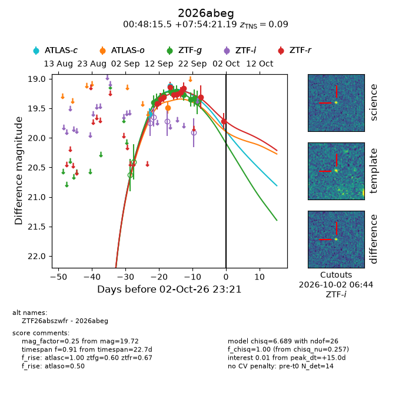
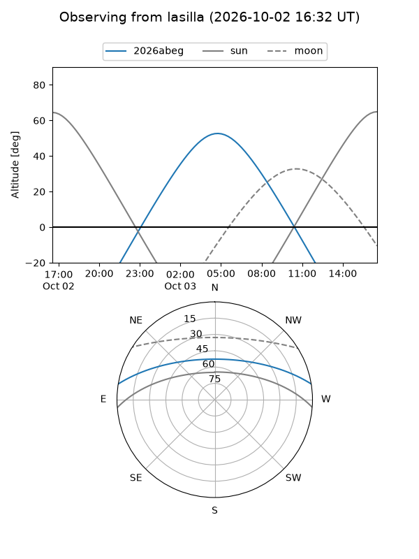
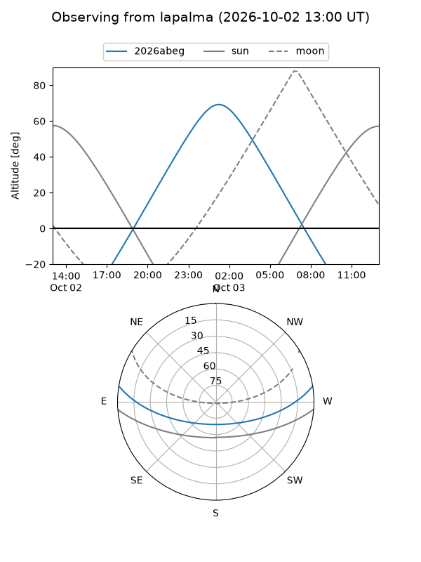
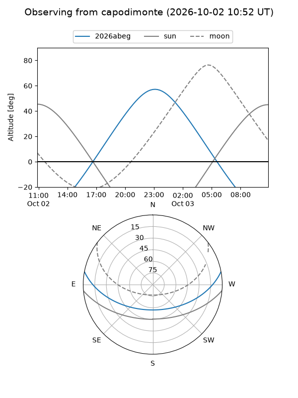
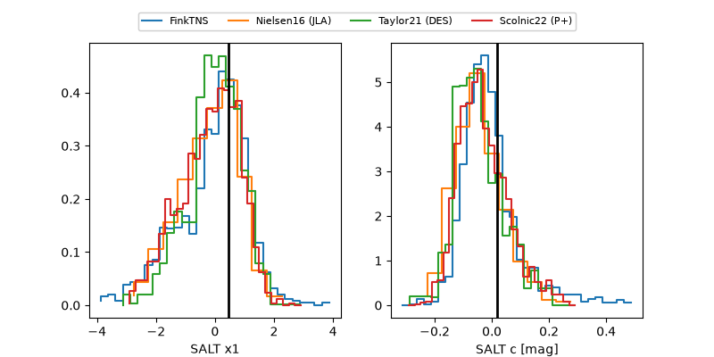

2026abeg
Target 2026abeg at 2026-10-02 23:23
Aliases and brokers:
FINK-ZTF: ztf.fink-portal.org/ZTF26abszwfr
Lasair-ZTF: lasair-ztf.lsst.ac.uk/objects/ZTF26abszwfr
ALeRCE-ZTF: alerce.online/object/ZTF26abszwfr
YSE-PZ: ziggy.ucolick.org/yse/transient_detail/2026abeg
TNS name: wis-tns.org/object/2026abeg
Direct TNS query: direct search
alt names
ZTF26abszwfr (ztf,fink_ztf)
2026abeg (tns,yse)
Coordinates:
equatorial (ra, dec) = 12.0645,+7.90589
equatorial (HMS+DMS) = 00:48:15.49,+07:54:21.19
galactic (l, b) = (121.5605,-54.95739)
Flags:
TNS type: SN Ia
TNS redshift: 0.0900
peak dt: +15.0
Photometry:
last atlasc=19.12, atlaso=19.49, ztfg=19.40, ztfr=19.72
2 atlasc, 1 atlaso, 11 ztfg, 10 ztfr detections
Lightcurve

Visibility



Additional plots
